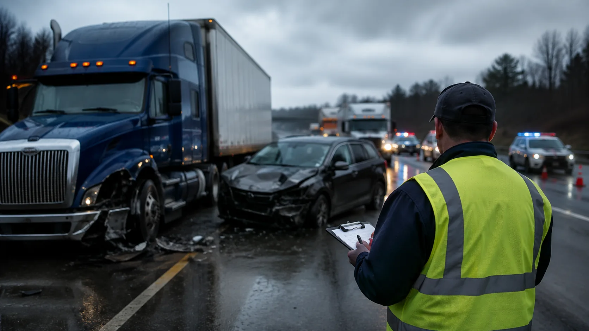

DOT Post-Accident Drug Test
DOT urine drug testing support for qualifying post-accident situations involving commercial drivers.
Request drug testing →When a qualifying accident occurs, screenings4u helps employers coordinate the appropriate drug and alcohol testing quickly and keep the response organized.

Post-accident response supportChoose the service that fits the situation and move the testing process forward without unnecessary administrative friction.
DOT urine drug testing support for qualifying post-accident situations involving commercial drivers.
Request drug testing →Coordinate DOT alcohol testing when post-accident alcohol testing requirements apply.
Request alcohol testing →Coordinate both DOT drug and alcohol testing through one streamlined post-accident request.
Request both tests →Support for transportation employers managing the testing side of a qualifying accident response.
Request coordination →When an event happens outside normal routines, contact screenings4u for assistance with next-step coordination.
Request support →Get help understanding the testing coordination process and what information is needed to move forward.
Talk with our team →Post-accident events create enough operational pressure already. Our role is to help keep the testing portion moving clearly and efficiently.
Help drivers understand where to go and what to expect for the testing appointment.
Keep the testing request, collection location, and next steps organized in one workflow.
Begin coordinating the appropriate service promptly when testing is required.
Use participating collection locations to support transportation operations across markets.
Start with the testing need, coordinate the collection, and keep the applicable documentation together as the response moves forward.
Determine whether drug testing, alcohol testing, or both are needed for the situation.
Provide the accident and driver details needed to coordinate testing.
Arrange the applicable collection through a participating testing location or available service option.
Keep the testing documentation with the employer's post-accident compliance records.